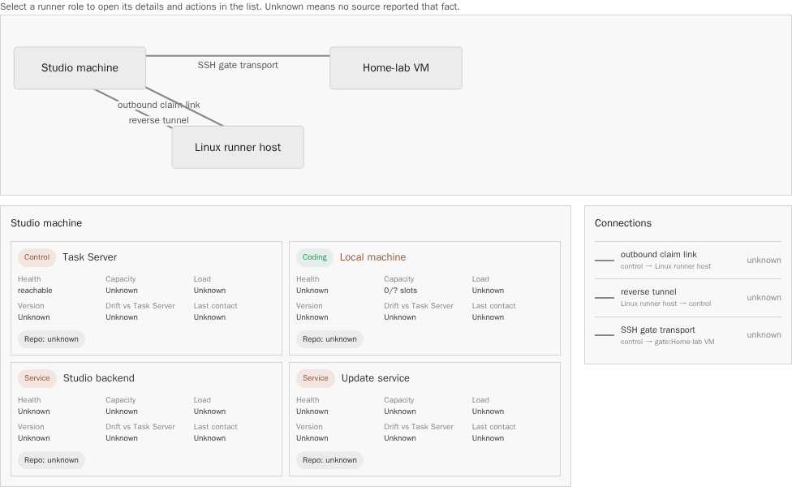
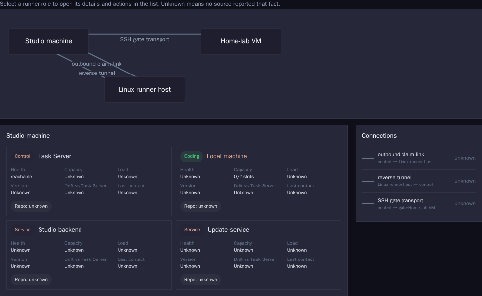
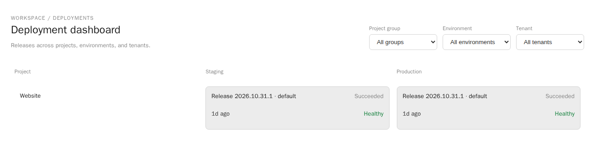
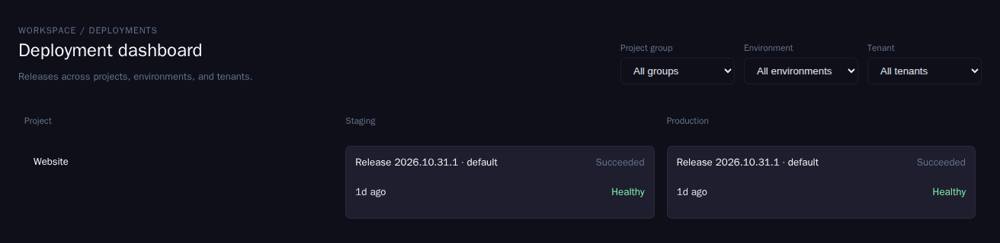

One graphical Operations view that draws how a deployment is built: system boundary, locations, hosts, VMs, containers, processes, stores, links, artifacts and registries. It reads one structure model, scoped to the workspace, a project or an environment, and shows it as a host view or a container view at three zoom levels. Declared structure is the skeleton; observed status, version and drift are overlays.
Status Decision pendingPhase Decision readyScope Operations area, workspace and projectProduct code unchanged by this Dossier
Request
Robert asked on 1 November 2026 for a graphical Operations view of deployment structure. It must show AGT's several containers, accommodate very different targets and runtime environments, offer a container view and a host view with a visible system boundary, stay readable from one container to dozens of hosts, take the workspace as the bracket around projects that each show a partial picture, and give libraries a deployment view through their registries. Operations is an area of the one application, with the same sign-in, state, navigation and objects. It is not a separate tool.
The proposal in one paragraph
Add a Structure view to Operations, once at workspace level and once inside each project's Operations area. Both read one projection, GET /api/v1/operations/structure, which joins existing declarations (connectivity manifest, environment declarations, project.yml schema 2) with existing observations (host reports, link health, run-target state, health checks, release drift). One recursive placement node gives nesting of any depth. The renderer is a small, lazy-loaded Angular SVG component built on the house tokens, using C4 deployment semantics rather than a separate tool. The first slice puts a read-only view of AGT, from declared data, in front of Robert.
Today
Four surfaces already touch deployment structure. Each shows part of the picture; none draws nesting, a system boundary or artifacts. The screenshots in Evidence show the two that come closest.
At most ten software architecture elements per project.
Software structure, not deployment.
Leave alone.
The visual language below continues the hand-drawn topology sketches of the deployment story and the dynamic placement Dossiers. Those decisions stay authoritative for authority, bus and placement; this Dossier only decides how the structure is modelled and drawn.
Model
The view draws instances: a deployable unit, released at some version, running in one environment on one placement. Everything else either groups instances (boundary, location, host, VM, cluster) or connects them (link, artifact flow, publication).
Figure 1. Structure model. One recursive placement node covers physical machines, VMs, cloud servers, clusters, namespaces and pods. Proposed model, 1 November 2026.
Object
Meaning
AGT example
Exists today as
Workspace
Bracket for all projects and shared placement
The operator's workspace
WorkspaceRecord
Project
One repository; owns units and declarations
Agent Studio, Website, libraries
ProjectRecord
Deployable unit
What a project builds and releases
Studio backend, agent-host, Engine image, chat package
Reverse tunnel to the runner host; SSH gate transport
RunnerLinkResource, connectivity routes, gate transport
Artifact, registry, package
Built output, where it is stored, under which channel and version
Release package; role images; npm package
Release, RegisteredArtifact, PublishTarget
Nesting of any depth
Placement is one node type with an open kind vocabulary and a parentId. The renderer maps each kind to a shape family (host, VM, cluster, namespace) and treats unknown kinds as plain hosts, so a new runtime such as a Proxmox node or a Nomad allocation needs no new code. Depth is unlimited; the zoom levels decide what is open, not the model.
One repository, several units; several repositories, one system
A unit's identity is project plus unit name, never the repository alone. One repository with several deployed units declares several units in its project.yml. Several repositories forming one system point their units at one workspace-level System, generalising today's ComponentOwnershipMapping. The boundary belongs to the system and environment, so both cases draw the same frame. Placement objects that several projects share, such as the Studio machine or a Web VM, belong to the workspace's installation inventory, not to a project.
Facts
Declared facts give the skeleton. Observed facts attach to it by stable keys (host id, runner id, project and environment id, image digest) and never silently create structure.
Fact
Declared source
Observed source
Units and artifacts
.agent-studio/project.yml schema 2: artifacts (name, static or container, image), deploy steps with targets
Releases and RegisteredArtifact records; deploy records
Environments
project.ymlenvironments and lifecycles; docs/deployments/environments/*.json (target host, template, destination, health URL, data)
New structure section in project.yml schema 2 (externals, managed services) and installation externals in the manifest
Control-plane probes only (TCP, TLS, HTTP); otherwise none
Consumers
ComponentOwnershipMapping consumer projects
Lock files of workspace projects (new parser), publish targets
Showing a difference
State
Meaning
Drawn as
Matched
Declared and observed agree
Solid outline, status glyph
Declared only
No source reported it inside the freshness window
Dashed outline, hollow glyph, words "Not observed" and the last report time
Undeclared
Observed, no declaration
Hatched fill, chip "not declared"
Differs
Version, image digest or placement differs from the declaration or from the release
Chip "≠ declared" or "↓ behind" with both values in the detail
Stale
Last observation older than the source's window (host heartbeat 90 s, health check interval, registry lookup 6 h)
Hollow glyph with age; never a healthy zero
Unreachable by design
Managed or external service the platform cannot enter
Dashed outline; "declared · probed via TLS" when a control-plane probe exists, otherwise "not observed"
Hosts report no container list today; container state reaches the backend only through run-target observations. Undeclared containers therefore need one addition: an optional container summary (name, image digest, state) in the host capability report (S2).
Visual language
Shapes encode kind, outlines encode provenance, glyph shapes encode status, chips carry versions and differences, and dash patterns encode link kinds. All colours are the house document tokens; this file follows the reader's light or dark preference.
Figure 2. Visual language key, drawn by the prototype renderer. Proposed shapes, 1 November 2026.
Boundary: dashed rounded frame in ink with its name; everything outside sits in an "Outside the boundary" column or row.
Placement: host, VM (inner inset line) and cluster boxes with a small kind icon and an uppercase kind line; locations and environments are quiet tinted lanes.
Instances: container (tinted rounded box), process (pill), data store and managed service (cylinder), external (dashed, transparent), package (tabbed box), artifact (folded corner).
Status: filled circle with tick, triangle with exclamation mark, square with cross, hollow circle with question mark. Each has the word in its tooltip, the outline and the screen-reader label. Healthy stays small and calm; only degraded and down draw attention (hard rule R4).
Collapsed groups: a box with a stacked edge, its child counts and the number that need attention. Counts equal the children shown when the group is opened (hard rule R3).
Links: solid with arrow for calls, long dash for tunnels, short dash for SSH transport, dotted bold for artifact and package flow. Each link carries a number that resolves in the key under the drawing, because readable text labels do not fit into gutters between nested boxes.
Scale
Three semantic zoom levels. Level 1, Overview: boundaries, environments and locations with collapsed machines, clusters and groups. Level 2, Hosts: machines open, nested placement (VM, namespace) collapsed. Level 3, Full: everything open. Any box can be opened or closed individually.
Replica grouping. Identical siblings collapse into one node with a count (Review host ×3) below level 3. In the container view the same unit placed in several regions merges into one node with "2 placements".
Link attachment. Links attach to the nearest visible machine or group box, so tunnels read as machine-to-machine and stay readable at any level. Selecting a node draws its own links at instance level.
Layout. Deterministic nested flow layout: the same data gives the same picture, so screenshots and memory stay stable. Large drawings scroll; the outline is the complete text alternative.
Themes and keyboard
The product component reads --studio-* semantic tokens (--studio-success, --studio-warn, --studio-error, surfaces, borders), never hex values, and uses the spacing scale. Every box is a focusable button with a label that states name, kind, status, version and drift. Tab follows the outline order, Enter or Space opens and closes a group or selects an instance, keys 1 to 3 set the level, H and C switch the view, and Escape clears the selection. The outline under the drawing lists the same nodes as a tree. No animation is needed; any later transition collapses under reduced motion.
Setups
All figures in this section are produced by the same renderer as the prototype from the scenario data in src/scenarios.js. Status, version and drift values are illustrative, not observations.
Very simple: one website, one container, one VM
Figure 3. One website in one container on one cloud VM, with its edge process. Visitors and the built-in registry stay outside the boundary. Illustrative values.
AGT today, host view
Figure 4. AGT in the host view, level 3. Three locations inside one boundary; the home lab shows three nesting levels (physical machine, VM, containers). The Studio machine has processes and stores but no containers. The second Studio instance is hatched because no declaration in the repository describes it running alongside the workstation instance (see card check). Version chips show that parts run different releases at the same time. Roles only; illustrative status values.
AGT today, container view
Figure 5. The same AGT instances in the container view, grouped by function. Machines disappear as boxes and reappear as "on …" placement text; links attach to the groups. Roles only; illustrative values.
AGT today, version overlay at level 2
Figure 6. Version overlay, level 2. The VM collapses to "4 containers" and the three review hosts would merge into "Review host ×3". Behind-release chips mark the Engine image, the second Studio and the locally built review images. Illustrative values.
Complex: environments, regions, Kubernetes, managed data, dozens of services
Figure 7. Collapsed, level 1. A shop platform with production in two regions, staging and development. Each cluster reads as one box with "26 containers (56 replicas) · 4 namespaces"; the US cluster reports "2 need attention · 1 drift". Managed PostgreSQL, queue and object storage are dashed: declared, probed from the control plane or not observed. Illustrative values.Figure 8. Expanded, level 3, with the US cluster, staging and development closed again by hand. The EU cluster shows four namespaces and 26 deployments with replica counts. Illustrative values.Figure 9. The complex setup in the container view, level 2: each service appears once per namespace with its placements merged (web ×8, 2 placements). Illustrative values.
Library project
Figure 10. A library project without hosts. The npm package goes to the internal JFrog registry (channels next and latest) and to npm; the demo image goes to Docker Hub, whose last lookup failed. Consumers inside the workspace show the version they use; the Website is two releases behind. Illustrative values.
Workspace whole picture and one project's partial picture
Workspace
Project: Website
Figure 11. Left: three projects in one workspace with shared externals. Right: the Website project's partial picture of the same objects. Its own instances are drawn normally; the AGT run-target agent on the Web VM and the library's npm channel appear faded as other projects' objects, because they share a placement or a link with the Website. Everything else is omitted. Illustrative values.
Prototype
The prototype uses the same renderer. Switch scenario, view, level and overlay; open or close any box by clicking it or pressing Enter; select an instance to see its own links and where a click would lead in the product.
Keys inside the drawing: Tab moves between boxes, Enter or Space opens, closes or selects, 1 to 3 set the level, H and C switch the view, Escape clears the selection.
Outline of the current drawing (text alternative)
Views and navigation
Scope
Route (hash routes, as today)
Shows
Workspace whole picture
#/workspace/operations/structure, new Operations entry in the workspace section of the explorer, next to the Deployment dashboard entry
Every system boundary, shared placement and external
Project partial picture
#/projects/{slug}/operations/structure, first section of the project Operations area
The project's instances; other projects' objects that share a placement or a link, faded
One environment
Environment filter on both, ?env=production
Only that environment's boundary and placements
The query string keeps view (host or container), level, overlay and focus, so a link to a selected node can be pasted into a card. The application has no Angular router; routes are parsed in studio-route.ts, and the view mounts inside the tab view with @defer and a dynamic import, like the deployment dashboard.
Container view and host view
Both are projections of the same instances. The host view nests by placement and answers "what runs where". The container view groups by system and unit and answers "what is this system made of, and which versions run". A selection survives the switch.
Overlays
One overlay at a time keeps the drawing calm: Health (default; status glyphs and attention counts), Version (version chips, behind marks), Drift (difference chips; everything without a difference fades), and Load (CPU and memory band per host from host telemetry, S2).
Click targets
Node
Click leads to
Host, server, VM
The host row in Settings › Environment, host telemetry history, the header Environment view filtered to the host
Container, process
The deploy run that placed the current version (Deploy › History), its logs (Deploy › Operations), the environment's runbooks
Boundary, environment
The deployment dashboard cell and the release page
Link
Link health and actions (reconnect, pause) for tunnels; gate status for SSH transport
Managed or external service
Its health checks and the declaration line that defines it
Registry, package
The publish panel, the release page, the registry's own page
Libraries
A project without hosts still has a deployment view: its artifacts, the registries that hold them, and the projects that consume them (Figure 10). The same model covers it: a registry is a group, a channel or tag is a package node, publication and consumption are links.
Field
Source
Registry, internal or external
Declared per artifact: image today, plus registry (npm, NuGet, Docker Hub, GitHub, JFrog or another internal registry, with a secret reference for private registries) in the proposed structure section
Package, version, channel
npm dist-tags, Docker tags, JFrog repositories, GitHub releases; read by a registry lookup
Last publish
Registry lookup; the publish run when AGT published it
Consumers in the workspace
Lock files of workspace projects (package-lock.json, packages.lock.json), matched by package name; ComponentOwnershipMapping consumer projects
Drift
Consumer behind the latest stable channel; channel differs between internal and public registries; lookup failed or stale
Today the publishing feature derives targets from workflows and manifests and takes the current version from the last v* Git tag; it does not ask any registry, and no JFrog support exists. AGT itself is a first consumer case: its release identity names a NuGet package and the npm package coding-agent-chat, which the frontend pins at 0.4.1.
Repositories
The view needs four things to work for both one mono repository and several projects: unit identity independent of the repository, a workspace-level System, shared placement in the workspace's installation inventory, and the faded partial-picture rule. With these, splitting a repository later changes the owner project of some units and nothing in the drawing.
Recommendation: keep AGT's services in the mono repository
Do not split now. AGT has one release identity, one promotion and gate per commit, and shared contracts (Task Server contracts, orchestration decisions) that change together; a split would add cross-repository version pinning without a consumer outside AGT. The structure view does not need a split. Revisit per unit when it gains its own release cadence and an outside consumer; coding-agent-chat already has its own package version and is the first candidate, the runner and agent-host the second.
Build approach
The initial bundle limit is 3,800 kB and this commit's production build reports 3.66 MB initial, so the view must be a lazy chunk. Sizes below were measured on 1 November 2026 from the published npm packages.
Option
Licence
Size (raw / gzip)
Fit
Own Angular SVG renderer, nested flow layout and gutter routing
House code
Prototype renderer 32.8 kB unminified, no dependency
Full control of tokens, focus, labels, determinism. Link routing across nesting levels is the hard part; the prototype solves it by attaching links to visible boxes.
ELK.js (layered, hierarchical)
EPL-2.0 or GPL-3.0
1,646 kB / 477 kB
Best automatic nested layout with orthogonal routing across hierarchy levels. Weak copyleft needs a licence review; runs well in a worker. Candidate fallback router.
Cytoscape.js
MIT
436 kB / 136 kB
Compound nodes, canvas rendering. Canvas makes text, focus and theme tokens harder; compound layouts need extensions.
dagre
MIT
49 kB / 17 kB
Small, but layered graphs only; clusters are not real nested containers.
Mermaid (C4 diagrams) or Graphviz WASM
MIT
Mermaid 5,495 kB; Graphviz via viz.js 1,177 kB
Text in, SVG out. Fixed styling, little interactivity, no per-node state.
Structurizr or Backstage
Structurizr DSL and core: Apache-2.0; Backstage: Apache-2.0
Separate applications
Second tool with its own sign-in and catalog, which the request excludes. Their concepts are reused: C4 deployment nodes and container instances; Backstage system, component and resource.
Notation. C4 deployment diagrams already have the needed semantics: deployment nodes nest to any depth, container instances sit inside them, infrastructure nodes and external systems sit around a boundary. The view uses that vocabulary in house shapes and tokens; UML deployment notation adds stereotypes nobody in Operations reads.
Alternatives
Rendering and notation
R-A · Own SVG renderer, C4 semantics
Angular standalone component, lazy, deterministic nested layout, numbered link keys, outline alternative. Smallest chunk, full accessibility and theme control. Risk: link routing quality at very large expanded views.
R-B · ELK.js for layout and routing
Automatic hierarchical layout with orthogonal edges across levels. About 477 kB gzip lazy, EPL licence review, non-deterministic feel when data changes slightly; rendering still house code.
R-C · Cytoscape.js compound graph
Mature interaction model, canvas renderer. Theme tokens, keyboard focus and screen-reader labels need a parallel DOM; nested boxes are less natural.
R-D · Mermaid C4 or Graphviz
Fast to start from text. Styling, collapse state, overlays and click targets fight the tool; Mermaid alone exceeds the remaining initial budget many times over.
R-E · Structurizr or Backstage
Established notation and catalog, but a separate tool, sign-in and data store. Excluded by the request.
Data sources
F-A · Declared only
Fast and stable, but blind to what runs: an undeclared container or a stale host looks healthy.
F-B · Observed only
Shows reality, but structure flickers with outages, managed services and externals vanish, and nothing defines the boundary.
F-C · Declared skeleton with observed overlay
Declarations define nodes and boundary; observations attach by stable keys; differences are explicit states. Needs two small declaration extensions and one host report field.
F-D · Import an external model
Read a Structurizr workspace or a Backstage catalog. Useful as an optional import later; makes a second source of truth the master today.
Placement in the application
P-A · Operations, workspace and project
Workspace Operations entry plus a section in each project's Operations area; same sign-in, objects and links.
P-B · Settings › Environment only
Reuses the existing map, but hides structure in configuration and has no project partial picture.
P-C · Inside the deployment dashboard
One place for releases and structure, but the matrix and a drawing compete for the same width.
Recommendation
R-A with F-C and P-A, in six slices
Build an own lazy SVG renderer in Angular with C4 deployment semantics in house shapes, fed by a declared skeleton with observed overlays, placed at workspace and project level in Operations. Start with a read-only AGT view from declared data. Keep ELK.js as a measured fallback for link routing only if the complex-setup slice misses its crossing target.
One projection endpoint, GET /api/v1/operations/structure, joins existing declarations and observations. It never writes; edits stay in the declaration owners and the application API.
Extend, do not replace, declarations: optional parentId, kind and location on connectivity manifest machines; a structure section in project.yml schema 2 for externals, managed services and registries.
Replace only the Settings Environment Map mode; leave the deployment dashboard, header Environment view and architecture marble alone; embed the project partial picture in the project Operations area.
Keep AGT's services in the mono repository.
Budget: route registration adds at most 2 kB to the initial bundle; the structure chunk stays at or below 120 kB raw.
Evidence
Evidence is classified as observed (read in the repository or measured), inferred, or proposed. Repository references are relative to the checkout at commit 3abd8478a.
Light

Components sit in cards below, not inside the machines
Dark

Evidence. Today's Environment map draws each machine as one flat box on a grid. The declared components (the Home-lab VM's four containers in the fixture) are not drawn inside their machine, and the drawing has no VM nesting, system boundary or external service.Light: captured by capture.mjs from the production build of commit 3abd8478a, all API responses from its role-named fixture, no backend.Dark: captured , same build and fixture.
Light

Release state per environment, no structure
Dark

Evidence. The workspace deployment dashboard is a project by environment-kind matrix with release, state, age and health per cell. It shows no host, container, link or boundary, so the structure view complements it instead of replacing it.Light: captured by capture.mjs from the production build of commit 3abd8478a, role-named fixture, no backend.Dark: captured , same build and fixture.
The card's description of AGT today was checked against the runbooks. These differences are drawn as the card states them and are left for the S1 declaration to settle; they are also good test cases for the drift states.
Card statement
Repository finding
How the figures draw it
A second Studio instance runs as a container on the Linux runner host.
docs/operations/setup/move-studio-to-server.md describes a move (application lifecycle D15 option B), with guards against two Studios, not a parallel instance.
Hatched, "not declared"
The promotion on the runner host produces the release package; it is copied to the gate host and fetched by the Studio machine.
develop-main-promotion.md "One-gate deploy package" runs the train with --release-dir on the gate host; no copy step is documented and the named fetch script is not in the repository.
Artifact links as stated
Host images are built where they run.
Role images are released digest-pinned to the container registry (.github/workflows/release.yml, scripts/release/promote-images.sh); only the development Compose profile builds from the checkout.
Review-host images "local", behind
Coding host and review host are two systemd services of the same binary.
Confirmed in linux-runner-host.md; unit names differ between that runbook and multi-machine.md.
Two processes, roles only
The gate runs as a container on the home-lab VM; the runner host has a verification checkout.
The gate VM is documented; a gate container and a separate verification checkout are not named.
As stated
Studio machine ports: hosts through tunnels, operator port.
Confirmed: 5031 for hosts through reverse tunnel port 15031, 5032 operator listener, 4011 frontend proxy, 5039 update service (connectivity-manifest.md, github-app.md).
Port text on the processes
Capture details: capture.mjs serves the prebuilt frontend with frontend/scripts/serve-prebuilt-frontend.mjs against a closed backend port, answers every API call from a role-named fixture, waits for the map or dashboard test ids, rejects page errors, and writes assets/capture-manifest.json. The fixture reports the product's seeded runner under a role-named host so no machine name appears.
Open decisions
Each decision names a recommended working option for implementation cards. The decisions remain pending sight review and operator acceptance.
D1 · Notation
A: C4 deployment semantics in house shapes Recommended
B: UML deployment notation
C: free notation
A gives nesting, container instances and boundaries with a vocabulary readers already know, without stereotypes.
D2 · Rendering
A: own lazy Angular SVG renderer; ELK.js only as a measured fallback router Recommended
B: ELK.js for all layout
C: Cytoscape.js
D: Mermaid or Graphviz
A keeps the chunk small, the picture deterministic and accessibility in house hands. The fallback triggers only if S5 misses its crossing target.
D3 · Data basis
A: declared skeleton with observed overlay and explicit difference states Recommended
B: declared only
C: observed only
D: import an external model as master
A is the only option that shows an undeclared container, a stale host and a managed service at the same time.
D4 · Where structure is declared
A: optional parentId, kind, location on connectivity manifest machines for installation placement; a structure section in project.yml schema 2 for externals, managed services and registries Recommended
B: one new workspace-level structure file
C: database records edited only in the UI
A extends files that already own these facts and stays backward compatible. Workspace-level Systems are created through the application API, never by editing workspace metadata directly.
D5 · Navigation
A: workspace Operations entry plus the first section of each project's Operations area Recommended
B: Settings › Environment only
C: inside the deployment dashboard
D6 · Default view, level and overlay
A: host view, level 2, Health overlay; the last choice is remembered per user and scope Recommended
B: container view, level 1
Operations questions start with "where does it run and is it healthy".
D7 · Settings Environment map
A: replace the Map mode with the embedded host view after S3; keep the List mode Recommended
B: keep both drawings
Two drawings of the same machines would drift apart.
D8 · Registry lookups
A: record each publish, plus a cached control-plane lookup every 6 hours and on demand; private registries through secret references Recommended
B: live lookup on every view
C: publish records only
D9 · Repository layout of AGT
A: keep the mono repository; revisit per unit when it gains its own cadence and an outside consumer Recommended
B: split services into projects now
Implementation
Six bounded slices are defined in workbench.json. No product code is changed by this Dossier.
Slice
Delivers
Acceptance target
S1 · Read-only AGT structure
Declared projection endpoint, manifest placement fields, lazy workspace Structure view with host and container views, levels, link key and outline
AGT shows one boundary, three locations, three machines, the home-lab VM with four containers (three nesting levels) and three externals; initial bundle grows at most 2 kB; chunk at most 120 kB raw
S2 · Observed status and drift
Host, link, run-target, health and release observations joined by stable keys; container summary in host reports; Health, Version, Drift, Load overlays
A stopped link or host turns its node within one 15-second refresh; each difference state has a fixture and a screenshot in both themes